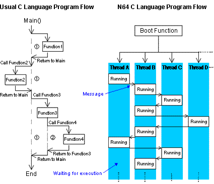
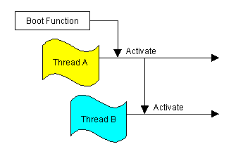
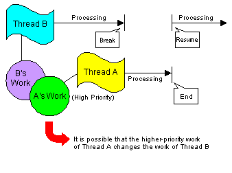

N64 game applications are written in the C programming language. However, an N64 game program is structured somewhat differently from a general C language program.
In the flow of an ordinary C program, each process executes sequentially to ensure that no processes are executed simultaneously. However, in the flow of an N64 C program, several processes may execute in parallel; that is, although they are not executing simultaneously they are executing together by taking turns -- pausing and restarting.
The flow of an ordinary C program continues as if one person is doing the whole job by completing several tasks in a series. The N64 C program flow continues as if several people are working on different parts of the job at the same time by sharing the tools. Because of this, you must design your N64 game programs carefully to manage all the workers and to manage the tool sharing process.
The following illustration shows the differences between a standard C program and an N64 game program: 
A typical C program starts from the beginning of the main() function and proceeds by calling library functions or originally defined functions.
An N64 C program, on the other hand, has no main() function. The boot function (a function specified in the spec file) begins the processing. The boot function, however, may or may not call all the other functions the program uses. After providing various initializations and settings, the boot function may turn control over to a thread that takes charge of the main part of the program. The threads in the program are then processed in parallel as shown in this illustration: 
N64 doesn't have a standard output device that can use functions like printf(). Instead, it has the osSyncPrintf() function that outputs on the debugger console.
The N64 operating system supports some but not all of functionality of the malloc() and free() standard C library functions. All their functionality will be supported in the future.
In N64 C programming, you must initialize all variables and arguments, defining them without initializing them is not sufficient. Even if an initial value was previously set, do not create a program that assumes the initialization has already occurred because once an initialized value is assigned, it changes. You need to initialize all variables in each and every program.
Also, it is impossible to guess when a low priority thread will be paused to allow a higher priority thread to execute. It is possible that a referenced working value has changed by the time the low-priority thread resumes execution.
Therefore, it is crucial that you initialize each and every variable. Even though a typical C program can rely on the system to handle initializations, an N64 C program must specifically provide all variable initialization and control. The following illustration summarizes why this is necessary: 
In the N64, the program data in the N64 Game Pak ROM is moved to RDRAM overwriting whatever is there already. Then the code is executed there in RDRAM. As a result, if you've written the data in the program area incorrectly, there is a very high possibility that processing will enter an endless loop and your program will hang. In N64 programming, you need to control addresses strictly.
In N64 processing, the CPU prepares the GBI command, which the RSP provides to the graphics process, in RDRAM. Because of this and because of the fact that the N64 cache adopts the write back method, it is possible that the data will remain in the cache and never be written to RDRAM even if the CPU writes the data. If this happens, the RSP cannot gain access to the data written by the CPU. Therefore, after writing the data, you need to move the data cache contents to RDRAM as occasion demands by using the osWritebackDCache or the osWritebackDCacheAll function. This ensures that RDRAM holds the current contents of the data cache.
In the other direction, new RDRAM contents put there by a DMA transfer are not automatically reflected to the cache. Therefore, before doing a DMA transfer to RDRAM, you need to nullify the data cache by using the osInvalDCache function and newly make the state of data transferable from the memory to the cache.
If you think your program code is correct but it isn't working correctly, make sure the cache and the memory are not working with different data.
Nintendo® Confidential
Copyright © 1999
Nintendo of America Inc. All Rights Reserved
Nintendo and N64 are registered trademarks of Nintendo
Last Updated March, 1999